Nova struktura sajta olakšava pronalaženje sadržaja bez zastarelih generatora i suvišnih skripti.
Dobro došli na Videlo
Mesto za pitanja, nadu i sadržaj koji ostavlja trag.
Videlo okuplja pažljivo odabrane tekstove i video materijale o veri, zdravlju, nadi i svakodnevnim životnim izazovima — u novom, čistom i savremenom izdanju na srpskom jeziku.
13 dostupnih traktata•Teme o veri, zdravlju i nadi•Radnim danima od 8:00 do 15:00
Izdvajamo
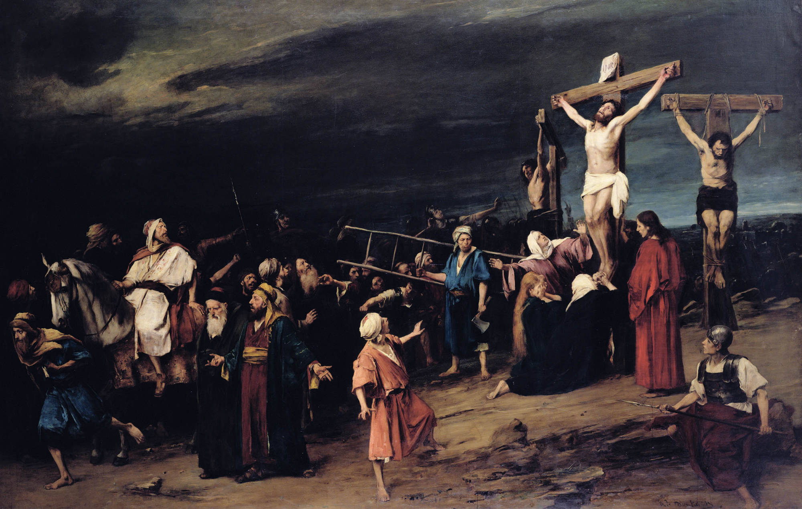
Svi tekstovi, pozivi na akciju i navigacija prilagođeni su publici kojoj se Videlo obraća.
Od uvodnih traktata do video predavanja i kontakta za dodatna pitanja — sve je na jednom mestu.
Biblioteka
Traktati koji otvaraju razgovor o veri i životu.
Odaberite temu koja vas trenutno najviše zanima i čitajte u formatu prilagođenom savremenim ekranima.

Traktat
Inteligentna vera
Jedan od načina da ispitamo istinitost Biblije jeste da pogledamo njena proročanstva. Jedna od Božjih tvrdnji jeste da On, kroz Bibliju, može predskazati budućnost (Isaija 46,9.10). Istraživ…
Pročitaj tekst →
Traktat
Tajne najboljeg mentalnog zdravlja
1944. godine.,kada je imala samo 16 godina, nacisti su uzeli Edit Eger iz njenog doma u Mađarskoj i poslali je u zloglasni logor smrti — Aušvic. Iako je pošteđena gasnih komora u kojima su u…
Pročitaj tekst →
Traktat
Mogu li mrtvi govoriti?
Da li ste vi automobil ili računar? „To je smešno”, kažete. „Nisam ni jedno ni drugo. Ja sam ljudsko biće.”
Pročitaj tekst →
Traktat
Razgovor sa Bogom
Molitva je otvaranje srca Bogu kao prijatelju. Ne zato što bi bilo neophodno da Mu otkrijemo šta smo, već zato da bismo Ga mogli primiti. Molitva ne spušta Boga ka nama, već nas uzdiže ka Nj…
Pročitaj tekst →
Traktat
Njutnovo zaboravljeno otkriće
Isak Njutn, poznat po mnogim revolucionarnim otkrićima u nauci, matematici i astronomiji, „smatra se od strane mnogih da je najveći i najuticajniji naučnik koji je ikada živeo (1).” Manje po…
Pročitaj tekst →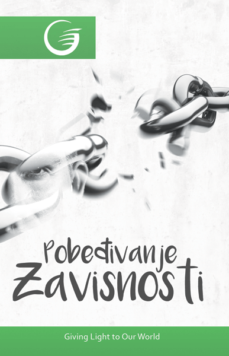
Traktat
Pobeđivanje zavisnosti
Kada sam video Ranka, činilo se da se nalazi na vratima smrti. Posle dugog zagrljaja, pogledao sam mu u oči koje su bile duboko upale u njegovu glavu. Posmatrao sam kako mu naviru suze. Reka…
Pročitaj tekst →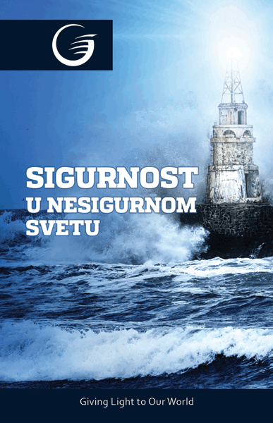
Traktat
Sigurnost u nesigurnom svetu
Ako biste mogli izabrati jednu reč da opišete stanje uma ove generacije, koja bi to bila? Ja bih izabrao reč „nesigurnost”. Čini se da je više ljudi nesigurno povodom budućnosti nego ikada p…
Pročitaj tekst →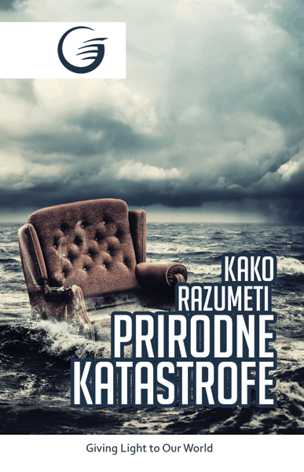
Traktat
Kako razumeti prirodne katastrofe
Ako biste mogli izabrati jednu reč da opišete stanje uma ove generacije, koja bi to bila? Ja bih izabrao reč „nesigurnost”. Čini se da je više ljudi nesigurno povodom budućnosti nego ikada p…
Pročitaj tekst →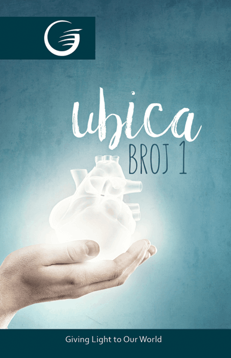
Traktat
Ubica broj jedan
Pedesetogodišnji Radovan bio je oličenje zdravlja, uzoran građanin i porodičan čovek, voljen od svoje dece i zajednice. Ali njegov uticaj je naglo iščezao, kada se jednog nedeljnog jutra, be…
Pročitaj tekst →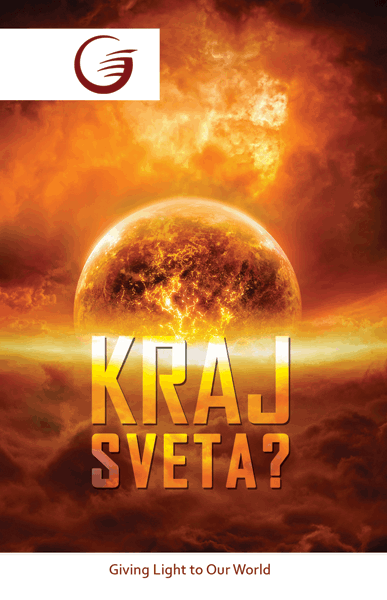
Traktat
Kraj sveta
Temperatura u zemljinom jezgru, bombardovana neutrinovima iz masivne sunčeve baklje, dramatično će se povećavati. To će izazvati kataklizmičke zemljotrese širom sveta, uključujući erupciju m…
Pročitaj tekst →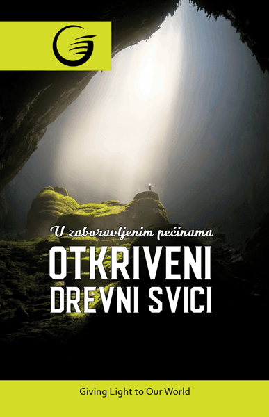
Traktat
U zaboravljenim pećinama otkriveni drevni svici
Godine 1947. jedan mladi pastir po imenu Mohamed ed Dib krenuo je kroz litice Judejske pustinje tražeći kozu koja je odlutala iz njegovog stada. Dok se penjao po stenovitom terenu u potrazi…
Pročitaj tekst →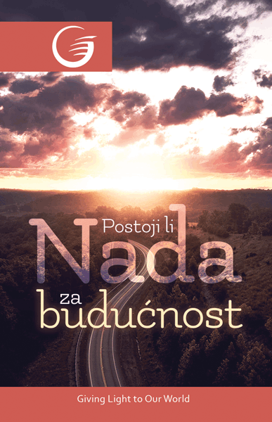
Traktat
Postoji li nada za budućnost?
Nije nikakva tajna da se planeta Zemlja ovih dana nalazi u potpunom haosu. Glavne novinske mreže skoro stalno objavljuju šokantne izveštaje o smrtonosnim prirodnim katastrofama, teroristički…
Pročitaj tekst →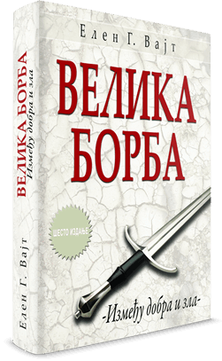
Preporuka za čitanje
„Velika borba” — knjiga koja osvetljava sukob dobra i zla.
Ako želite dublje proučavanje velikih biblijskih tema, ova knjiga je prirodan sledeći korak posle traktata sa sajta.
Video sadržaj
Dokumentarna serija „Tajne Biblije”.
Izabrane epizode dostupne su preko YouTube linkova, sa novim prikazom koji je jednostavan za pregled i deljenje.
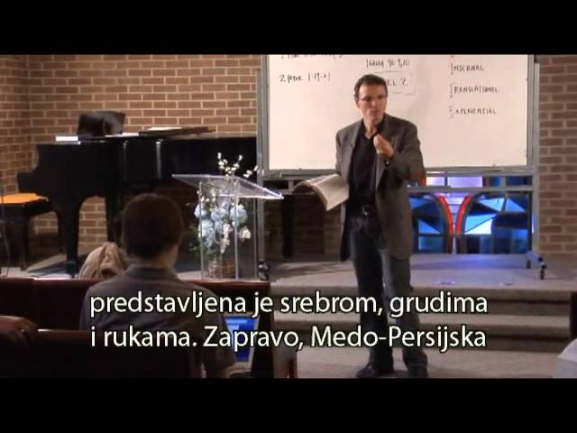
YouTube
Zaboravljeni san - 1
Pogledajte jedno od najgledanijih predavanja iz serijala „Tajne Biblije”.
Otvori video →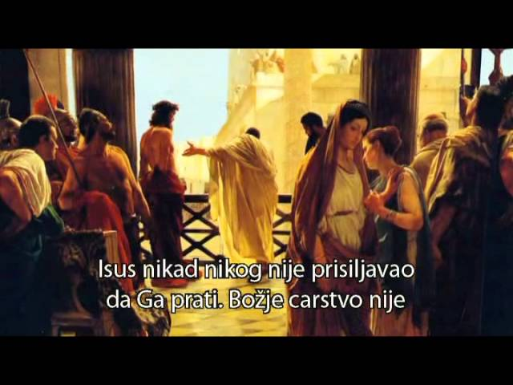
YouTube
Poreklo zla - 2
Pogledajte jedno od najgledanijih predavanja iz serijala „Tajne Biblije”.
Otvori video →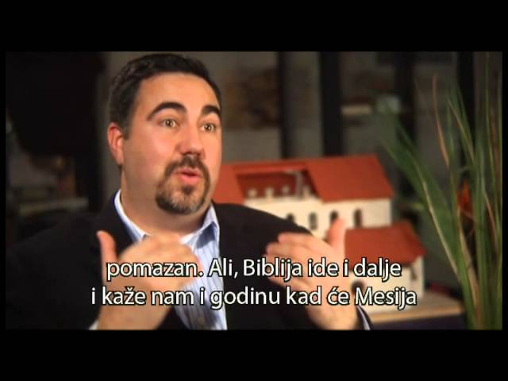
YouTube
Neverovatna proročanstva - 3
Pogledajte jedno od najgledanijih predavanja iz serijala „Tajne Biblije”.
Otvori video →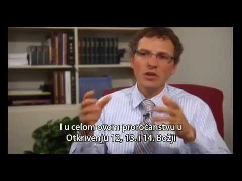
YouTube
Kovčeg zaveta - 4
Pogledajte jedno od najgledanijih predavanja iz serijala „Tajne Biblije”.
Otvori video →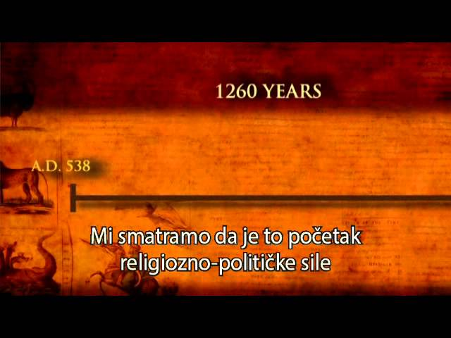
YouTube
Razotkrivanje Antihrista - 5
Pogledajte jedno od najgledanijih predavanja iz serijala „Tajne Biblije”.
Otvori video →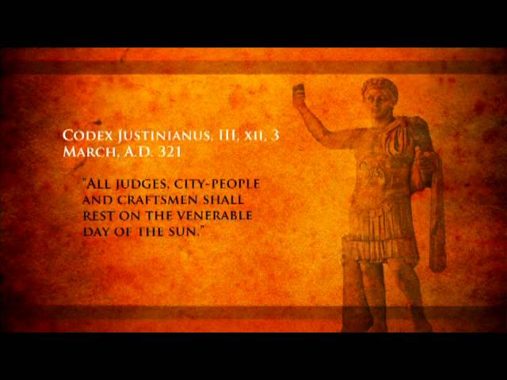
YouTube
Antihristov amandman - 6
Pogledajte jedno od najgledanijih predavanja iz serijala „Tajne Biblije”.
Otvori video →„I poznaćete istinu, i istina će vas izbaviti.”Jovan 8,32
Kontakt
Javite nam se ako želite razgovor, literaturu ili dodatne informacije.
Umesto zastarelih formi, ovde su istaknuti najdirektniji načini da stupite u kontakt sa timom Videla.
021/66-12-851
018/523-806
Dostupni smo radnim danima od 8:00 do 15:00 za pitanja, naručivanje literature i podršku.
Pregledajte sadržaj →Pošaljite poruku i pratite objave putem zvanične Facebook stranice Videlo.
Otvorite Facebook →